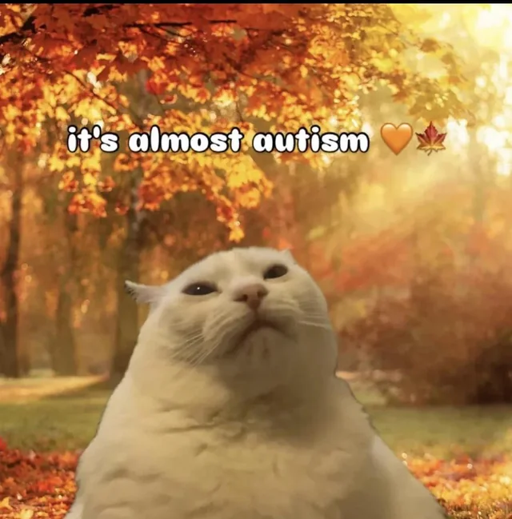

Welkom

Ik volg Graduaat Programmeren bij Thomas More.
Ik vind programmeren fascinerend, vooral omdat het me uitdaagt om goed na te denken over het ontwerp voordat ik begin met het coderen.
Ik ben nog mijn plek in de IT nog aan het ontdekken, en sta ik nog open om bij te leren en te groeien.
Waar ik goed en minder goed in ben
Mijn sterkste kant is dat ik nadenk voordat ik begin te programmeren.
Ik werk een ontwerp uit, zodat ik weet wat ik zal coderen en minder fouten maak.
Waar ik nog in moet groeien, is backend-ontwikkeling en webdesign.
Dat is voor mij nog vrij moeilijk, maar met projecten zoals deze website maken, leer ik nog wat.
Over Mij
Wilt u meer over mij leren? Bekijk dan mijn CV.
Over mijn werkervaring en projecten, leest u meer op Ervaringen.
En in mijn vrije tijd ben ik bezig met PC-hardware en viool; daarover vertel ik meer in Hobby's & Interesses